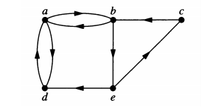

Вежба 19. Дали низите од темиња формираат пат во следниот граф? Кои
патишта се прости? Кои се циклуси? Кои се должините на патиштата?
Пат - бидејки е (непрекината) низа од јазли
Пат - бидејки е низа од јазли
Не е пат - не постои ребро `{d, b}`
Не е пат - не постои ребро `{b, d}`

а) `а, b, e, c, b`
Решение
Едноставен пат - не содржи исто ребро повеќе од еднаш
Должината на патот е - 4 `{a, b}`, `{b, e}`, `{e, c}` и `{c, b}`.
Не е циклус - бидејки не завршува во ист јазол од кај што почнал.
Решение
Не е едноставен пат - содржи исто ребро повеќе од еднаш `{a, d}` два пати
Должината на патот е - 4 `{a, d}`, `{d, a}`, `{a, d}` и `{d, a}`.
Циклус - бидејки завршува во ист јазол од кај што почнал `a`.
Решение
Решение
Вежба 20. Одредете дали следните графови се сврзани. Колку сврзани
компоненти има секој од овие графови?
За неориентиран граф се вели дека е сврзан ако постои пат помеѓу секој пар на
различни јазли на графот.
Сврзан.
a)
Решение
Не е сврзан.
3 сврзни компоненти
Решение
1 сврзна компонента
Решение
2 сврзна компонента
Вежба 21. За секој од следните графови одредете дали е слабо или силно
сврзан.
а) Слабо сврзан (на пр. нема пат помеѓу а и b во ориентираниот граф, но
би имало во соодветниот неориентиран граф);
Решение
б) Слабо сврзан (на пр. нема пат помеѓу c и b во ориентираниот граф, но би имало
во соодветниот неориентиран граф);
в) Не е ниту слабо ниту силно сврзан;
г) Слабо сврзан (на пр. нема пат помеѓу f и a во ориентираниот граф, но би имало
во соодветниот неориентиран граф);
д) Силно сврзан;
ѓ) Не е ниту слабо ниту силно сврзан.
Вежба 22. Докажете дека ако `u` е теме со непарен степен во граф `G`, тогаш
постои пат од `u` до друго теме `v` во `G`, кое исто така има непарен степен.
Ќе изградиме пат кој не користи претходно поминати ребра. Како што го
градиме патот, замислуваме дека ги бришеме ребрата кои ги поминуваме
со цел да не ги користиме повторно. Започнуваме од теме `u` и избираме
произволен пат/ребро. Тоа ќе биде првата компонента од патот. Во било
кој момент, ако патот достигне до теме со непарен степен, нашата задача
е завршена; но секогаш кога ќе пристигнеме до теме со парен степен, ни се
гарантира дека постои излезно ребро од тоа теме. Кога ќе го
напуштиме тоа теме ќе избришеме по две ребра (тоа со кое влеговме и
тоа со кое излеговме од темето). Темето кое го посетивме имаше парен
степен, а ние избришавме 2 ребра, па според тоа повторно ќе има парен
број на ребра. На овој начин кога ќе стигнеме до теме со парен степен,
секогаш има начин да продолжиме. Бидејќи постојат само конечен број
на ребра, нашиот пат мора некогаш да заврши и единствениот начин на
кој може да заврши е ако пристигне во теме со непарен степен.
Решение
Вежба 23. Докажи дека секој конечен граф во кој секое теме има степен
најмалку два содржи циклус.
Нека `v_0` е теме во графот и `e_1` е ребро кое го содржи темето `v_0` . Нека
`v_1` е
другото теме на `e_1` . Бидејќи `v_1` има степен најмалку два, следува дека
постои ребро `e_2` различно од `e_1` , кое го содржи темето `v_1` и нека `v_2` е
другото теме на `e_2` . За `v_2` на сличен начин наоѓаме ребро `e_3` и теме
`v_3` и
ја продолжуваме оваа постапка се додека некое од темињата не се
повтори (некое теме мора да се повтори, бидејќи графот е конечен, т.е.
има конечно многу темиња). Нека `v_n` е првото теме што се повторува, т.е.
`v_n -= v_(n-k)` , тогаш патот `v_nv_(n-1)...v_(n-k)` кој минува низ ребрата
`e_(n-1), e_(n_2) , . . .,
e_(n_k)` е циклус.
Решение
Вежба 24. Докажи дека секој граф со `n` темиња и најмалку `n` ребра содржи
циклус.
Ако во графот има темиња со степен нула или еден, тогаш одбираме едно
такво теме и го исфрламе заедно со ребрата кои го содржат (одбираме
подграф кој се состои од сите ребра кои не го содржат избраното теме и
сите темиња освен избраното). На овој начин, бројот на темиња се
намалува за еден, а бројот на ребра за најмногу еден, т.е. бројот на ребра
ќе остане поголем од бројот на темиња. Постапката ја продолжуваме се
додека постојат темиња со степен нула или еден. Бидејќи графот е
конечен, постапката мора да заврши после конечно многу чекори. После
завршување на постапката мора да остане барем едно теме (ако има само
едно теме, мора да има барем едно ребро, а во тој случај степенот на
темето е барем два). После завршување на оваа постапка секое теме во
графот има степен барем два, па од претходната задача следува дека
постои циклус во овој граф. Бидејќи крајниот граф е подграф од
почетниот, следува дека и почетниот граф содржи циклус.
Второ решение – со индукција:
Решение